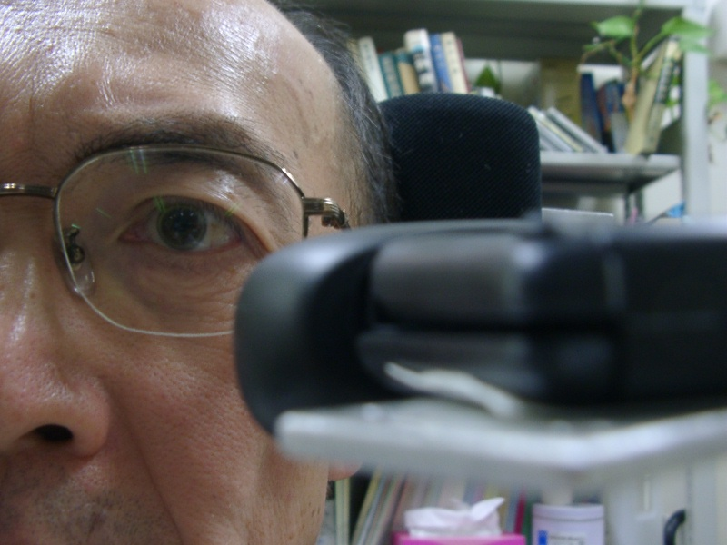
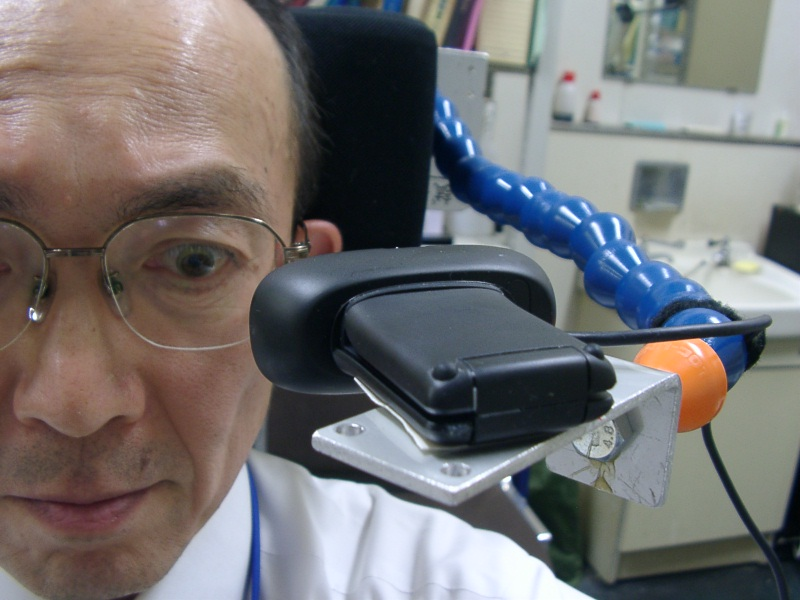
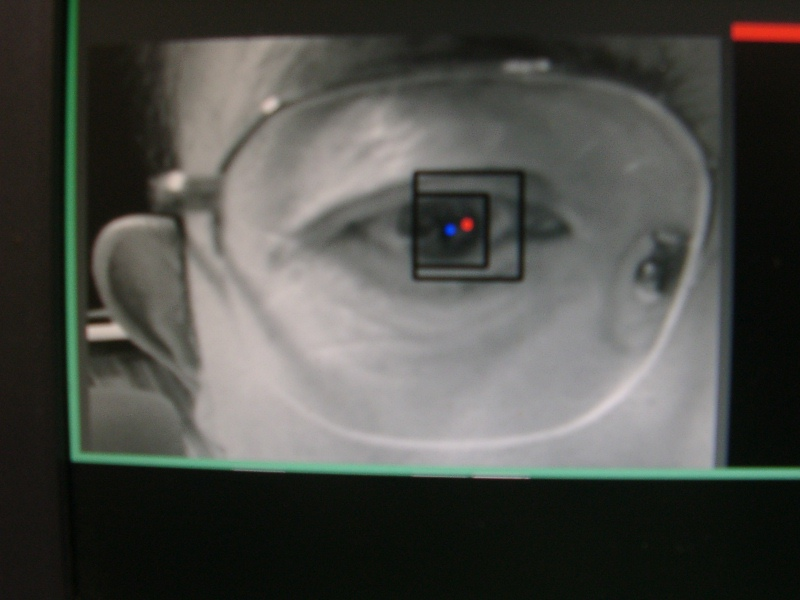
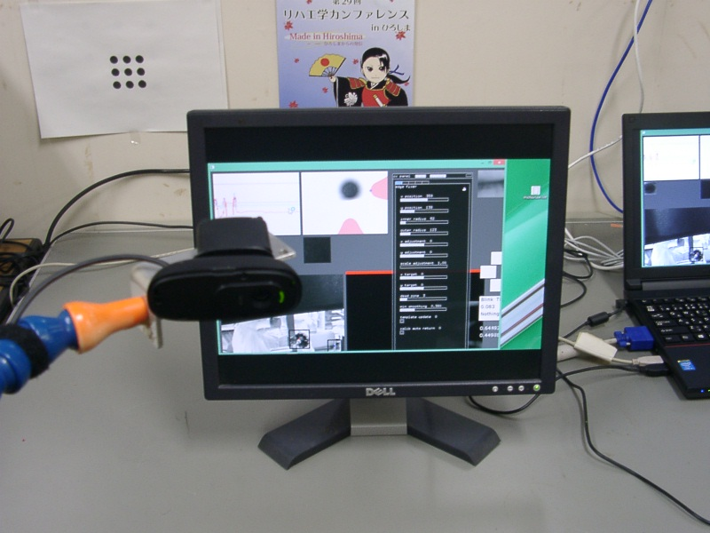

かならずお読みください→
The Eye Mouse へようこそ
動画 ６分４９秒 音が出ます
The Eye Mouse って何？
重い麻痺のため会話や筆談がうまくいかない人にとって、パソコンの役割は小さくありません。古い時代ではタイプライタが同じ目的で使われていたとの話も伝わっています。
しかしキーボードやマウスを普通に操作出来なくても、あきらめる必要はありません。その人の事情に合わせた代わりの道具や手段を利用して、パソコンを使うことができるかもしれません。 このような『不自由な人を助ける道具』がこれまで数多く開発され、そして普通のマウスが難しい場合に代わりになる道具は『代替マウス』などと呼ばれています。The Eye Mouseは、これまで対応が容易でなかった重度な人を対象とした代替マウスとして、比較的運動が残存しやすいと考えられる眼球運動をパソコン操作に利用する道具として開発を進めています。 また製作に際して、インターネット上に公開されているオープンソース（所有権が放棄された無料のソフト）をいくつか利用してコストダウンを図っているなども特徴のひとつです。
The Eye Mouse は The EyeWriter から生まれた
The EyeWriterは、2003年にALSを発症したグラッフィックアーティスト、Tempt1の創作活動の再開を支援するプロジェクトの一環として、多くのボランティアと寄付によって開発されました。2010年の開発終了後、関係者が所有権をはじめとする諸権利を放棄し、誰でも自由に入手（Webサイトからダウンロード）し、利用できる、改良できる、再配布できることになりました。このようなプログラムは一般に『オープンソース』と呼ばれます。
The Eye Mouse は The EyeWriter に改造を加え、パソコンのマウス操作できるようにしました。 また The EyeWriter で必要な赤外線撮影カメラと赤外線照明の代わりに通常のWebカメラが使えるようにしました。その他。介護の現場での利用に便利な改良も加えています。そして The Eye Mouse も The EyeWriter と同様にオープンソースとして公開したいと計画しています。
その第一の目的は、より多くの人がさらに改善、改良の活動に参加できるように支援すること。 第二の目的は、ユーザと相談し使いやすく調整し改造を行う人の技能育成を支援すること。 そして第三の目的は、このソフトを必要とする人に広く利用してもらえるようにすることと考えています。
オープンソース
このような取り組みはコンピュータの分野ではそれほど珍しくはありません。例えば、OSではlinux、オフィスソフトではLibre Office、ブラウザではFirefox、メーラではThunderbirdなどがあります。これらは基本的に無料で誰でも利用できます。この他にプログラムの開発ツールやプログラムの部品をオープンソースにしている事例や無料で配布している事例もあります。
福祉機器とオープンソース
意思伝達装置は神経難病などコミュニケーションが困難な人々に使われています。しかし、患者数が少ないので販売数も多くありません。その結果収益があがりにくいという問題がありますが、関係する多くの人々の努力によって供給が継続されています。
しかし経済状況が厳しい状況で、かつて社会貢献として開始された福祉関係のプロジェクトのいくつかの継続が難しくなっています。意思伝達装置の他にいつの間にか生産停止、流通停止され入手できなくなった福祉機器もあります。 このように不採算部門を抱えるメーカもそして安定供給を求めるユーザもともに不安を抱えています。オープンソースがこれを解決する鍵のひとつになるかもしれません。
公共の資産としてソフトウエアをつくり公共の場に置き、ボランティアがメンテナンスし、必要な人は無料でダウンロードして利用することができる。そしてその人をサポートする人もいるというのはどうでしょう。
２０年前なら『絵空事』と言われたでしょうが今は違います。 パソコンは既に十分普及し低価格化し『珍しい物』ではなくなりました。 コンピュータエンジニアは毎年数多く教育され社会に送り出され、 日常的にパソコンを使っている人は全人口の半分以上、 知り合いの知り合いまでたどれば何とかなりそうです。
これがいつの日にか実現できないかと夢見ています。




2014/10/24 公開研究企画課リハ工学科にもどる